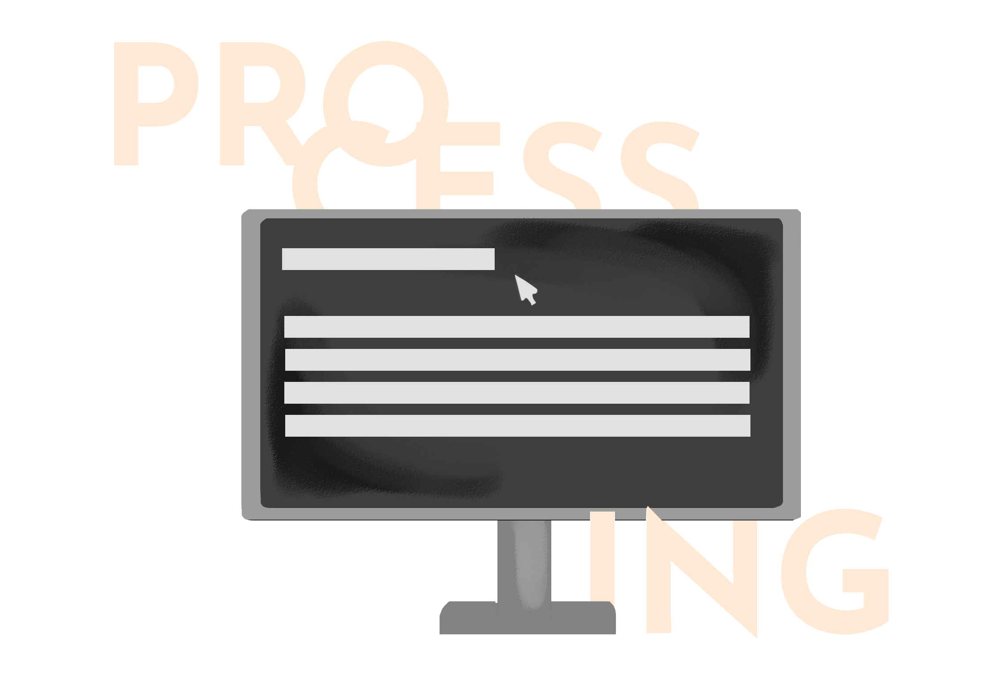

Redefining digital gifting experience.
Projects
Have a look at my works.

Turning abstract ideas into digital illustrations.

Creating interactive artworks through codes.

Open for client request.
Liefe gaat door de Maag
For our Bespoke Design class, we were given a project to create a digital gifting and unwrapping experience for Hallmark. My partner and I created a customizable food box called 'Liefe gaat door de Maag'. When someone receives it, they will receive unlabeled ingredients and the challenge is: they have to cook an unknown dish using unknown ingredients, with the Hallmark website as a guide! Our project was chosen as the best. See the unwrapping prototype I created here.
Duckbrows
My first experience with visual world is through drawing. Since I was little, I got influenced by cartoons and I tried to recreate it myself. Those doodles I did transformed into a real passion, even until now. When I turned 16, I found a way to explore my interest and showcase it to the world by creating @duckbrows on Instagram. My main inspirations for my artwork are cartoon, haute couture, and my own experiences. See more of my artworks here.
Processing
For our Programming class, we are required to create an interactive artwork with Processing. I got an idea of a program that enables a user to create an interactive artwork. I played with a black bachground and three colors, and the user can create an 'artwork' from three colors. But here's the twist: you can only use the colors in limited amount of time, so you have to race against time. Experience it yourself here.
Freelance work
I take commissions from time to time, whether it is for digital artwork or graphic design. One of my projects is I was hired by Opinionion, a Jakarta-based startup company. See more here.